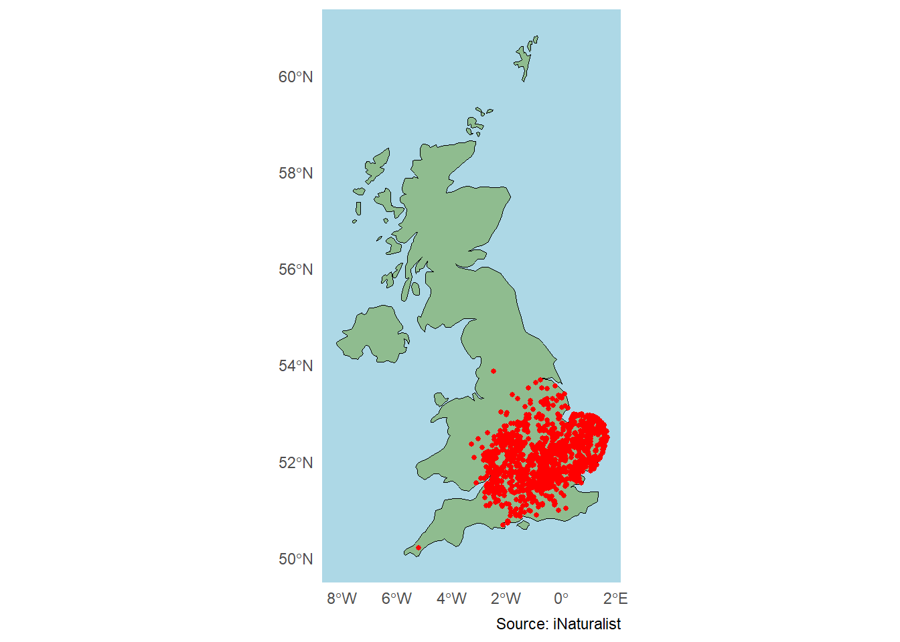
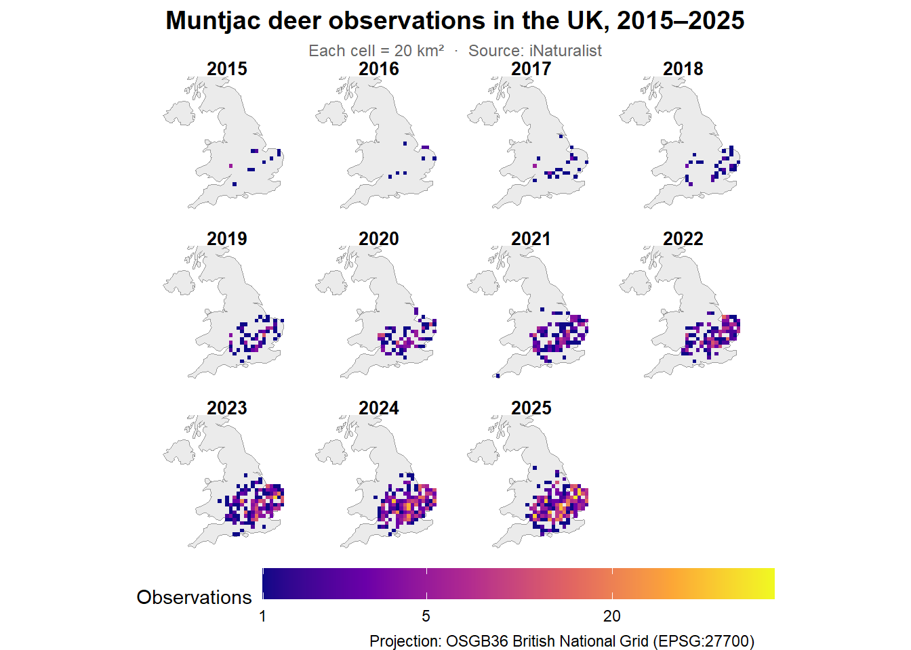
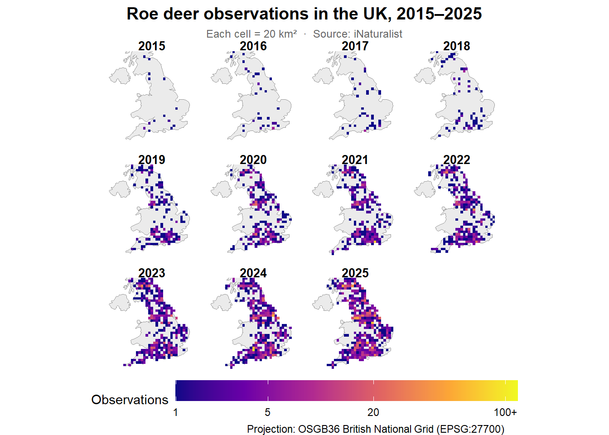
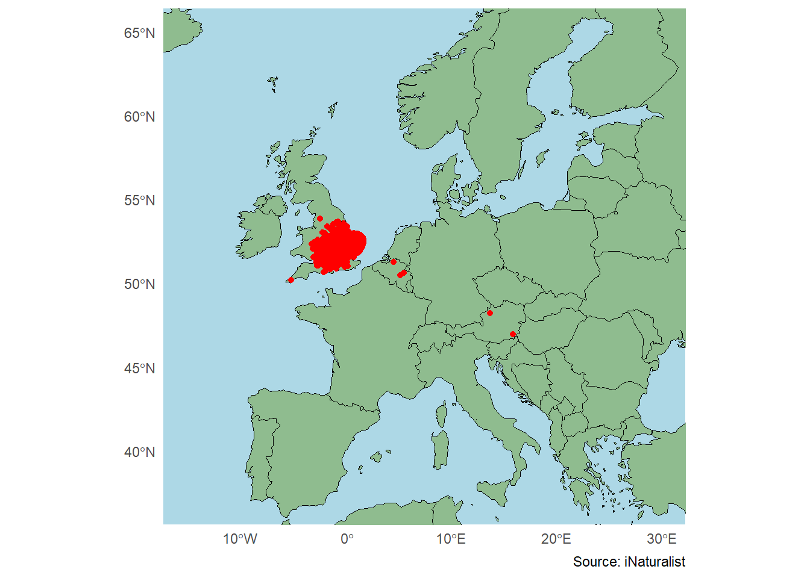

Range Change Analysis of Reeves’ Muntjac using Citizen Science Data
1. Introduction
Reeves’ muntjac (Muntiacus reevesi) is a small species of deer originally native to South-Eastern China. It was brought to Woburn Park in Bedfordshire in the 1890s, before being released deliberately and by accident into surrounding areas in the 1900-1930s. Its relatively rapid colonisation of other areas of England, its tendency to eat important wildflowers like bluebells, and the fact that it may out-compete other native deer make it a strong example of an invasive species.
Whilst scientists can conduct rigorous studies into the distribution of invasive species, citizen science may also be of aid in tracking the spread of invasive species and in helping to confirm their current range. iNaturalist is a website and app available to the public and one of the most widely used citizen science platforms within ecology/conservation/zoology/botany. In June of 2025, iNaturalist celebrated 250 million verified observations across the world, showing just how widely used this platform is. Additionally, iNaturalist data is fed into the Global Biodiversity Information Facility and thus has contributed to 6 500 scientific publications (iNaturalist, 2025). Citizen science can therefore be of clear help to professional scientists. This project will look at how and if citizen science data can be used to analyse the range and range change of Reeves’ muntjac, first at the level of just the UK and then expanding to the regional level of continental Europe.
2. iNaturalist observations of Reeves’ muntjac in the UK 2015-25
This first simple map plots every observation of Reeves’ muntjac in the period of 2015-2025. It can clearly be seen that observations are clustered around the South East and the Midlands, with fewer observations seen further and north and a single observation in Cornwall.
The next map breaks down the observations recorded each year into their own map. It also consolidates observations to 20 km2 cells, which are coloured to indicate the number of observations within them. Observations start out sporadically and in 2015 and 2016 do seem to be close to Bedfordshire, where Reeves’ muntjac was originally released. They also were observed in the North East. By 2019, a pattern emerges that continues until 2025: Reeves’ muntjac seems to have a higher incidence at the core of its range (also close to Bedfordshire), and becomes less frequently observed towards the periphery. This helps to justify that this is in fact the ecological range of Reeves’ muntjac and not a random assemblage of observations, else highest incidences would be expected to occur randomly.

The GIF below also animates this increase in observations.

A major confounding factor to consider is whether the number of muntjac observations has increased because the number of user observing animals on iNaturalist has itself increased. iNaturalist was only released in 2008 and so by 2015 was a relatively new platform, especially to the wider public. In 2015, the user base of iNaturalist was thought to be around 50 000 - 60 000, whereas in 2025 there were thought to be over 4 million active users. To better address this confound, other animals can be compared to see if this pattern was also observed and to compare if the rate of observation increased similarly, shedding some light on whether iNaturalist’s data can capture the expansion of Reeves’ muntjac. The Western roe deer is native to the UK and so would be expected to have expanded its range significantly over the past decade, but the map below seems to indicate a different story. Prior to 2019, roe deer observations were rare and sporadic, seemingly increasing every year from 2015 to 2025. Therefore, given the assumption that roe deer have not changed their range, the rate of increase of roe deer sighting should be less than the rate of increase in Reeves’ muntjac sightings if they have in fact been expanding over the past decade. This principle underlies occupancy analysis - the idea that the number of observations of animal populations known to be relatively stable can be used to estimate user effort, and then this can be used to predict how many Reeves’ muntjac users would be likely to observe each year based on an increase in user effort alone. If the the number of Reeves’ muntjac observations increases a rate greater than expected if only driven by the increase in user effort, then it may suggest that they are increasing in population and their range.

A regression analysis supports this. Comparing the growth rate of observations of Reeves’ muntjac to 4 stable UK species (Western roe deer, red fox, badger, and rabbit), the increase in observations for this invasive species seems to be significantly higher. Given these 4 species have stable populations it can be assumed that the increase in observations is due to user effort, whereas for Reeves’ muntjac the increase likely reflects, at least partially, an actual increase in the population. The model also has a distance predictor to see if the distance from the core of the muntjac range (defined as being roughly in Bedfordshire) can predict an expansion. This was not significant, so the citizen science data does not capture the expansion from this area (which does make sense given introduction occurred >100 years ago).
Call:
glm.nb(formula = n_obs ~ year_c + dist_km + year_c:dist_km +
offset(log(n_effort)), data = model_data, init.theta = 0.09963931647,
link = log)
Coefficients:
Estimate Std. Error z value Pr(>|z|)
(Intercept) -2.0087008 0.2678757 -7.499 6.45e-14 ***
year_c 0.1426383 0.0352588 4.045 5.22e-05 ***
dist_km 0.0016522 0.0009400 1.758 0.0788 .
year_c:dist_km -0.0001361 0.0001231 -1.106 0.2688
---
Signif. codes: 0 '***' 0.001 '**' 0.01 '*' 0.05 '.' 0.1 ' ' 1
(Dispersion parameter for Negative Binomial(0.0996) family taken to be 1)
Null deviance: 2286.1 on 4869 degrees of freedom
Residual deviance: 2255.3 on 4866 degrees of freedom
AIC: 9538.6
Number of Fisher Scoring iterations: 1
Theta: 0.09964
Std. Err.: 0.00422
2 x log-likelihood: -9528.58600 It could also be that observer bias still explains this increase in muntjac observations, however. Invasive species are often more generalist and can tolerate a wider range of environments, so it may be that muntjac get closer to urban areas and so get recorded by more people. Additionally, it could be that more users record muntjac compared to other medium-sized mammals simply because they know that they are invasive, either because they wish to contribute to citizen science or because they find the animal rarer or more interesting than native species. These are not very testable confounds as it is difficult to accurately assess a user’s motive behind recording a particular animal.

The limits of using iNaturalist data to model the expansion of Reeves’ muntjac becomes even clearer when expanding this analysis to the whole of Central Europe. There are documented invasive populations of Reeves’ muntjac in France, Ireland, Germany, the Netherlands, Belgium, and Denmark (Ward et al, 2021). However, from 2015-2025, a total of 5 observations of Reeves’ muntjac were made across mainland Europe: 3 from Belgium and 2 from Austria. Given the known distribution of Reeves’ muntjac in Europe, far more observations should be expected.
Interestingly, Ward et al (2021)‘s research into the distribution of Reeves’ muntjac highlights the Austrian population’s status as being based on ‘unconfirmed reports only’, making it odd that 2/5 of the total observations of this species come from such an unknown population. Looking at the observations on iNaturalist, the first was a dead male specimen recorded in 2017, and the second a live male caught on camera at night in 2022, which the user says was ‘seen for several days in the area then captured’. Both observations were made by the same user, but were great distances apart. This could indicate that the status of the Austrian population needs to be more thoroughly assessed. Furthermore, this does highlight one of the important aspects of citizen science, as people local to an area may be able to document species’ presence quite effectively, compared to traditional methods like using year-round camera traps that may only cover small areas and be relatively expensive.
Nevertheless, the limits of this data are exemplified in the case of France, which is known to have an established low-density population of Reeves’ muntjac, particularly in the Centre-Val de Loire region (Maillard et al, 2024). Despite the fact that this population appears to be growing and may be supplemented by illegal releases, no muntjac have been recorded in the entirety of France in the period 2015-2025 on iNaturalist. This may be because the population exists at such a low density in rural areas that they seldom come into contact with people. In the case of Austria, it shows that rare animals can be detected by citzen science to challenge upheld views about their distribution, but in the case of France, it shows that animals known to exist in a region can go completely undetected.
3. Conclusion
Citizen science is a key topic of interest for the fields of ecology and conservation, given it can generate a wealth of data over time across large areas of land, which would be otherwise unfeasible for a single research group to cover (Hognogi et al ,2023). This analysis shows that citizen science certainly has use for informing species presence and ranges, and that it can be used to supplement more robust research. For example, without Ward et al (2021)‘s ’undocumented reports’ and the iNaturalist observations, it may not have been known that Reeves’ muntjac is present in Austria. However, using citizen science data to rigorously address scientific questions about distribution changes over time may be difficult, shown by the increase in observations as user base increases. Additionally, observations are made disproportionately across different continents on iNaturalist, with an overwhelming majoirty made in North America and Europe, with Africa being the least represented (iNaturalist, 2025). This means that applying citizen science data may be more difficult depending on the location. Nevertheless, citizen science data offers a free, alternative line of evidence, and whilst the data here is not conclusive, it is indicative of trends that researchers predict are and will occur (Ward et al, 2021).